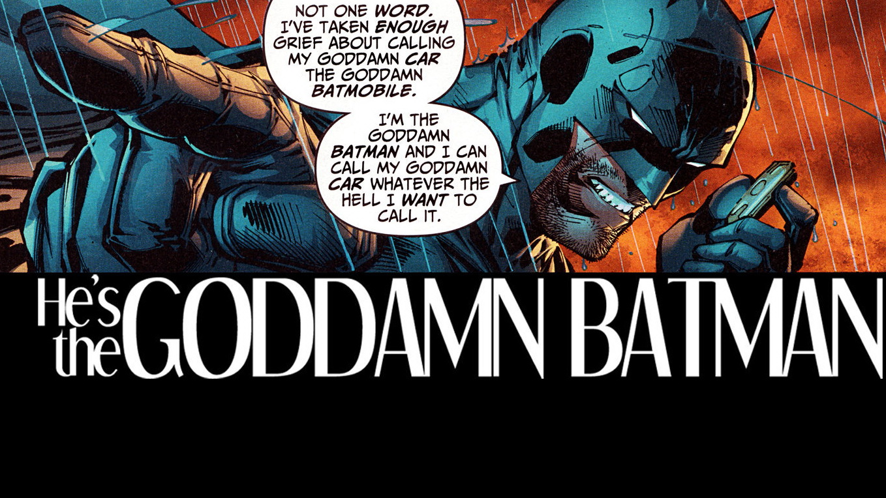

Batman
Use this document as a way to quickly start any new project.
All you get is this text and a mostly barebones HTML document.
Intro

Batman was created by Bob Kane and Bill Finger in 1939, after Superman.
More info
Bruce Wayne is the only character to be identified as Batman and is featured in many comics and films, not only Batman, but also Detective Comics, Batman and Robin, and Batman: The Dark Knight. Dick Grayson returns to the mantle of Nightwing and appears in his own ongoing series.
Analysis
So you know him, and may or may not love him, he’s Batman! He witnesses the murder of his parents and ever since then has been on a mission for justice and so on, you know how the story goes. But Batman is one of the most interesting superheroes out there. He’s also one of the most popular. With many, many iterations of the character, any character analysis of Batman is purely an interpretation of the character, obviously. So you can agree or disagree with my analysis, and that’s perfectly fine. Because overall Batman is represented very differently according to the writer, you have psycho-Batman, Bat-God, humanised Batman etc.